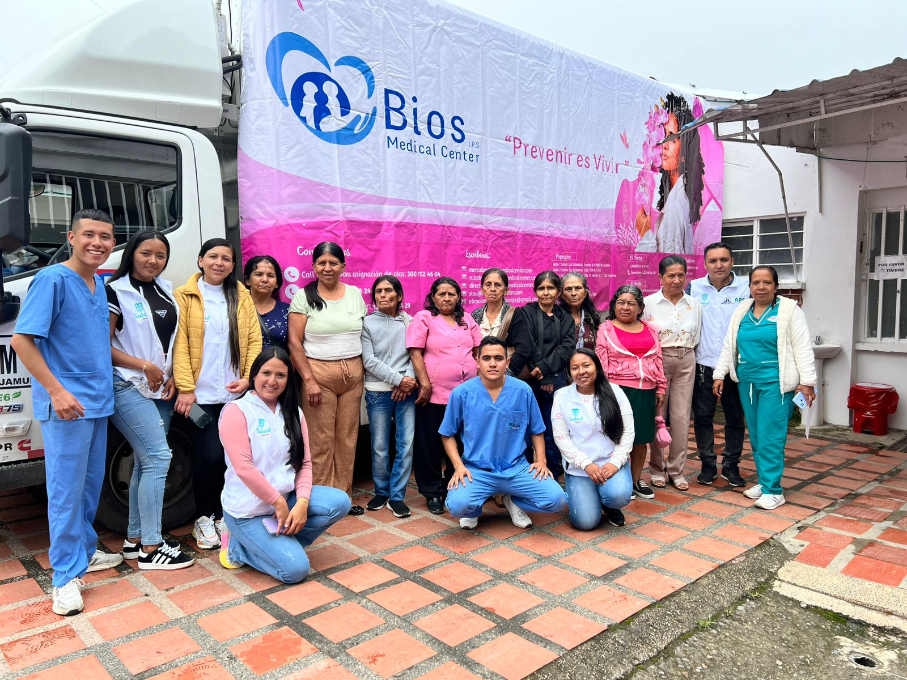
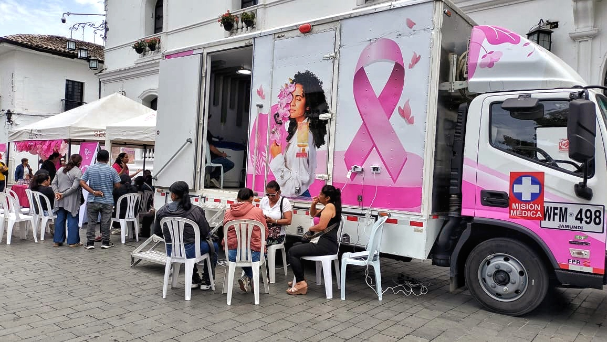
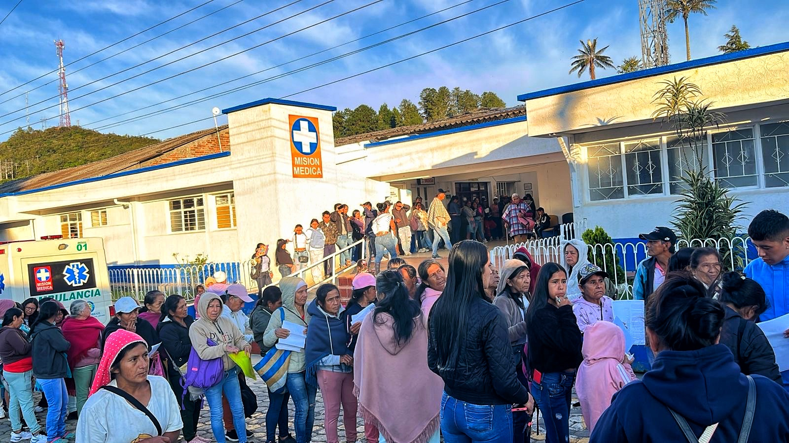
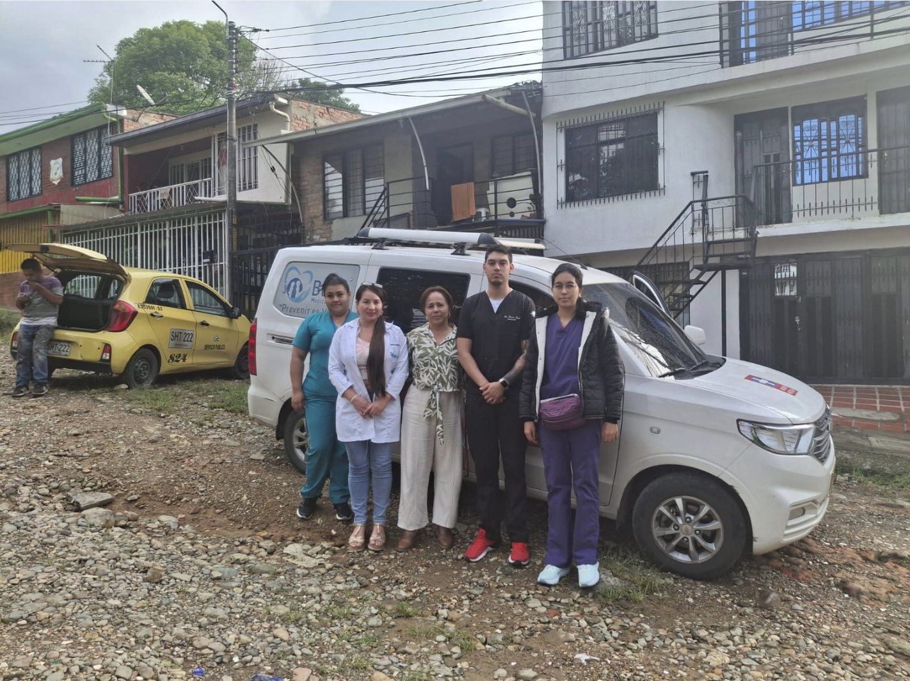
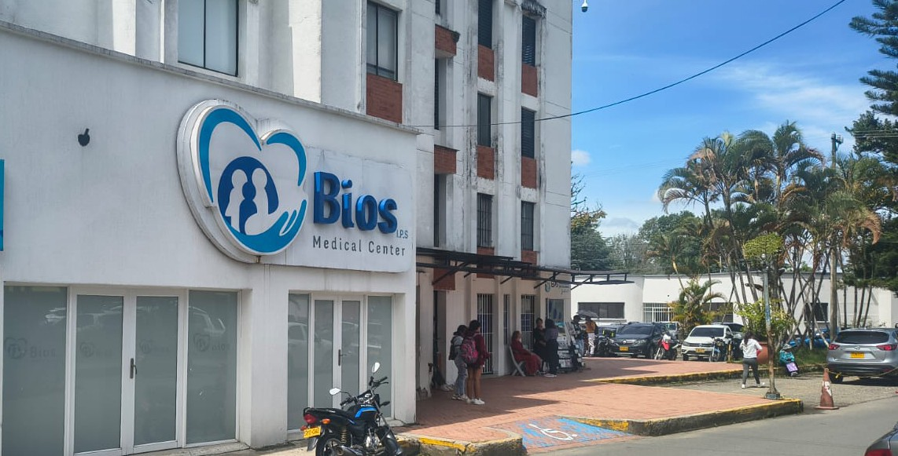
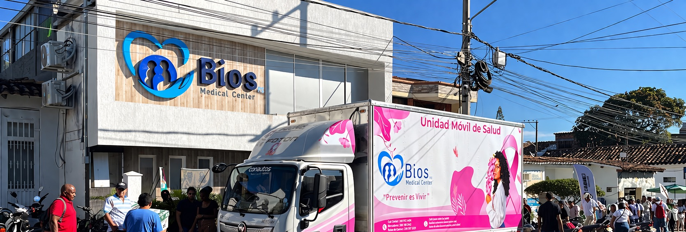

De forma fácil, ágil y segura.
Somos el centro médico preventivo del Cauca.

Prevención y beneficios exclusivos para tu familia

Detección temprana que salva vidas en el Cauca

Accede a tu historial médico de forma segura
Lo que ofrecemos
Atención integral diagnóstica y preventiva con tecnología de vanguardia.
Atención con médicos generales y especialistas para diagnóstico, seguimiento y control.
Análisis completos con resultados confiables y entrega rápida para tu tranquilidad.
Ecografías, mamografías y estudios con equipos de alta resolución para diagnósticos precisos.
Ecografía ginecológica, citología cervical y consulta médica especializada.
Ecografía mamaria y consulta médica especializada. La detección temprana salva vidas.
Prevención con chequeos periódicos, descuentos y atención prioritaria para ti y tu familia.
Nuestro modelo
Trabajamos bajo un modelo de atención preventivo y de mantenimiento, detectando a tiempo y acompañándote antes de que aparezca la enfermedad.
Identificamos factores de riesgo antes de que se conviertan en enfermedades.
Tecnología de punta para un diagnóstico preciso y rápido.
Seguimiento de tu estado de salud a lo largo del tiempo.

Boletín Epidemiológico
Información actualizada sobre rutas de detección, prevención y seguimiento oncológico en el Cauca.
Descargar boletínPrevención que salva vidas
Nuestro modelo está diseñado para mantener y mejorar tu salud antes de que aparezca la enfermedad.
Actividades del mes
Participa en nuestras jornadas extramurales. Acercamos la salud a tu municipio.

Marzo 2025 · Popayán
Mamografías y ecografías para mujeres mayores de 40 años. Sin costo en jornada.

Marzo 2025 · Santander de Q.
Consultas de seguimiento para pacientes en rutas de cáncer activas.

Próximamente · Municipios del Cauca
Nuestra unidad lleva servicios diagnósticos y preventivos a los municipios.
Estamos cerca de ti
Presencia en el Cauca con sedes fijas y unidades móviles.

Calle 15 Norte # 2-256 (Sector La Estancia), Torre A
Popayán, Cauca
(602) 820-0000
Lun – Sáb: 7:00 am – 5:00 pm

Calle 15 N # 2 - 256 Esq
Popayán, Cauca
(602) 820-0002
Lun – Sáb: 7:00 am – 5:00 pm

Cra. 10 #15-48
Santander de Quilichao, Cauca
(602) 820-0001
Lun – Sáb: 7:00 am – 5:00 pm
Norte del Cauca
Santander de Quilichao, Cauca
(602) 820-0002
Lun – Sáb: 7:00 am – 5:00 pm

Unidad Móvil · Mamografía


2 Vans especializadas
Contamos con nuestra Unidad Móvil de Mamografía —única en el Cauca— y dos vans especializadas que llevan servicios diagnósticos y preventivos a los municipios del departamento.
Tu voz importa
Como usuario de BIOS IPS tienes garantías y responsabilidades
Tus Derechos
Tus Deberes
Tu opinión nos ayuda a mejorar continuamente
También escríbenos a [email protected]
Tu opinión es clave para mejorar nuestros servicios
Tu respuesta es anónima y segura
Trayectoria y confianza
Nuestro compromiso con la calidad nos ha valido el reconocimiento de entidades nacionales.

Minsalud Colombia

ICONTEC

Sec. de Salud Cauca

Reconocimiento regional